All the style studies · Porcelain, dark, and the window color
You picked C for dark Porcelain. Here it is carried over: it's now the default on every dark page, and light has the same idea, more gently. Each page is shown before and now, with keys and pads at twice their size. The candidates you chose from are further down.
Dark. C's shadows are now in porcelain-dark.css, and dark aqua looks as it did when you picked it. Plain and plum came out deeper than aqua at first. Your aqua's deep shade was just outside sRGB, and Edge draws a blurred shadow in such a color about a quarter lighter than its alpha says. The shade now stays inside sRGB for every window color, at three quarters of C's strength, which is how C drew on aqua, so all three match. Also fixed: the dark pages had lost the glow on the track headers' LEDs.
Light. The same idea, more gently, since dark was the bigger problem. The shadows are in the glaze's shade and more diffuse: about three quarters as deep at the edge, and reaching 12 px instead of 8 or 9. Light leaves out dark's 1 px contact shadow, which on a light surface read as a dark rim.
| Keys | Pads | Overall | |
|---|---|---|---|
| Dark: plain, aqua, plum | 49%, 46%, 51% | 63%, 57%, 59% | about half |
| Light: plain, aqua, plum | 69%, 73%, 74% | 74%, 77%, 81% | about the same, spread wider |
Each shadow at its deepest, as a share of before, in perceived lightness (OKLab) just below a key and a pad. Overall is the whole shadow, summed down to where it fades out.
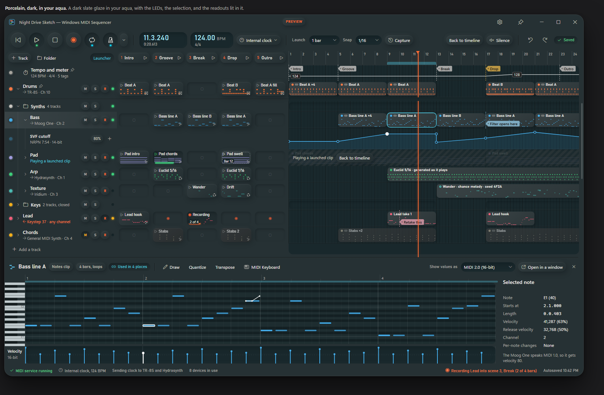
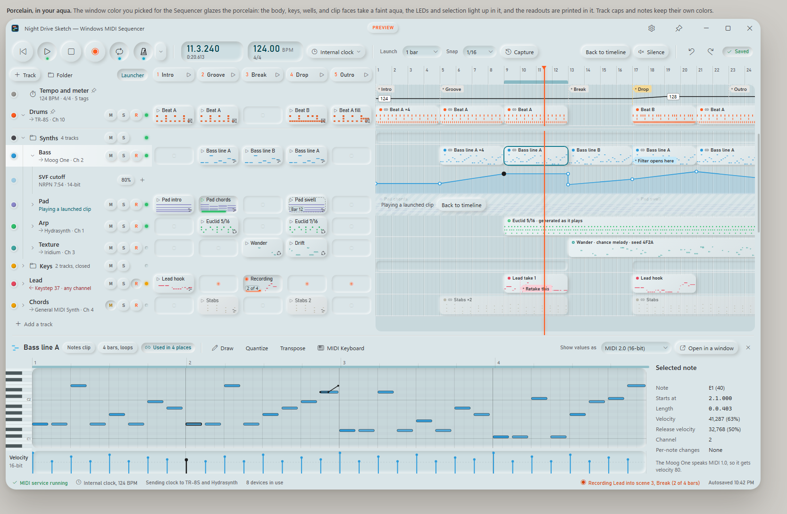
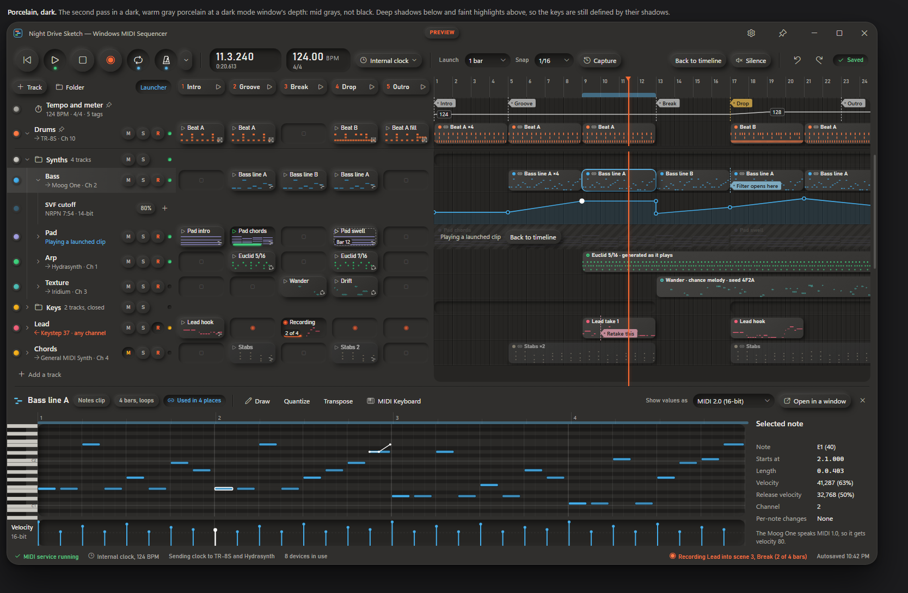
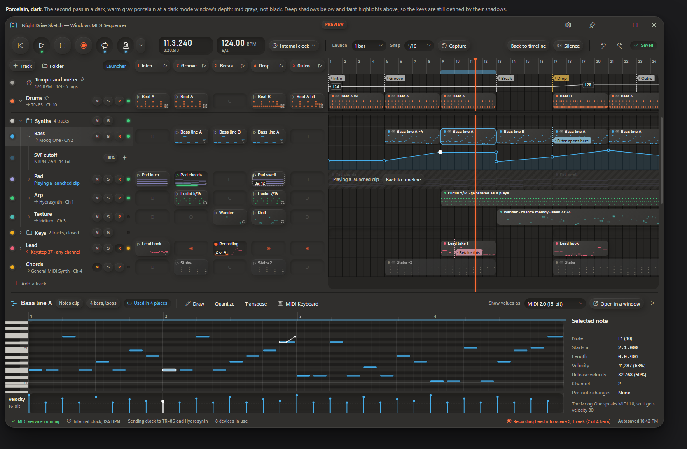
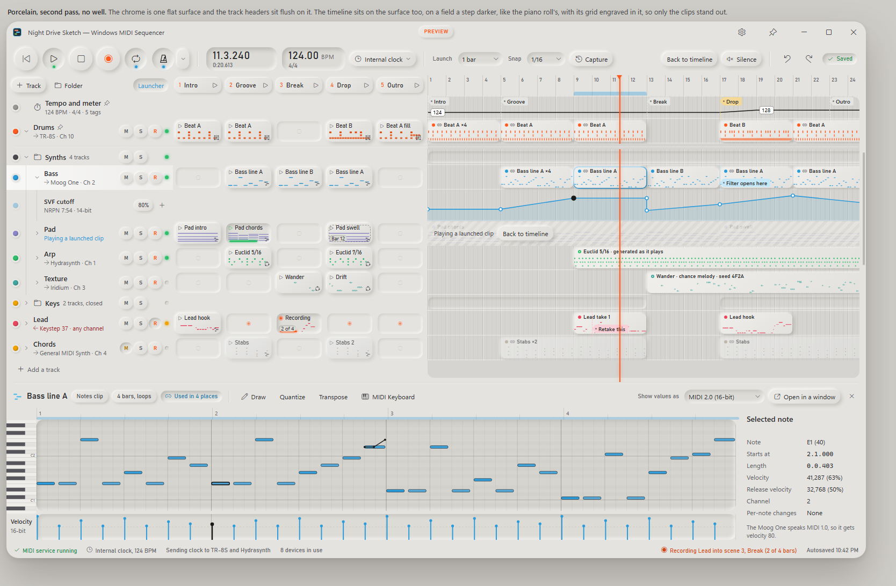
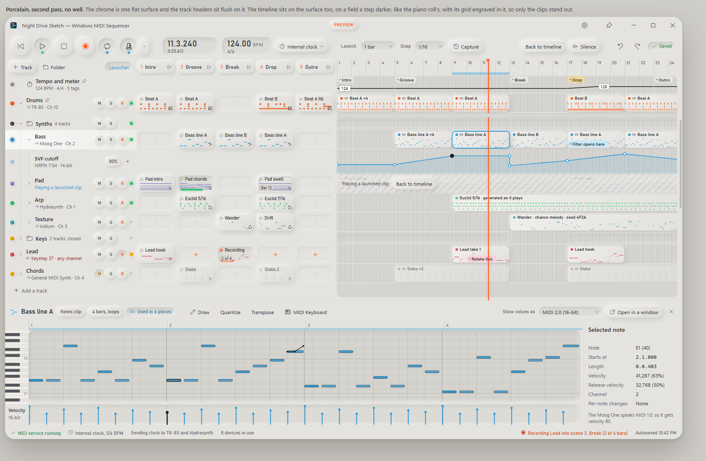
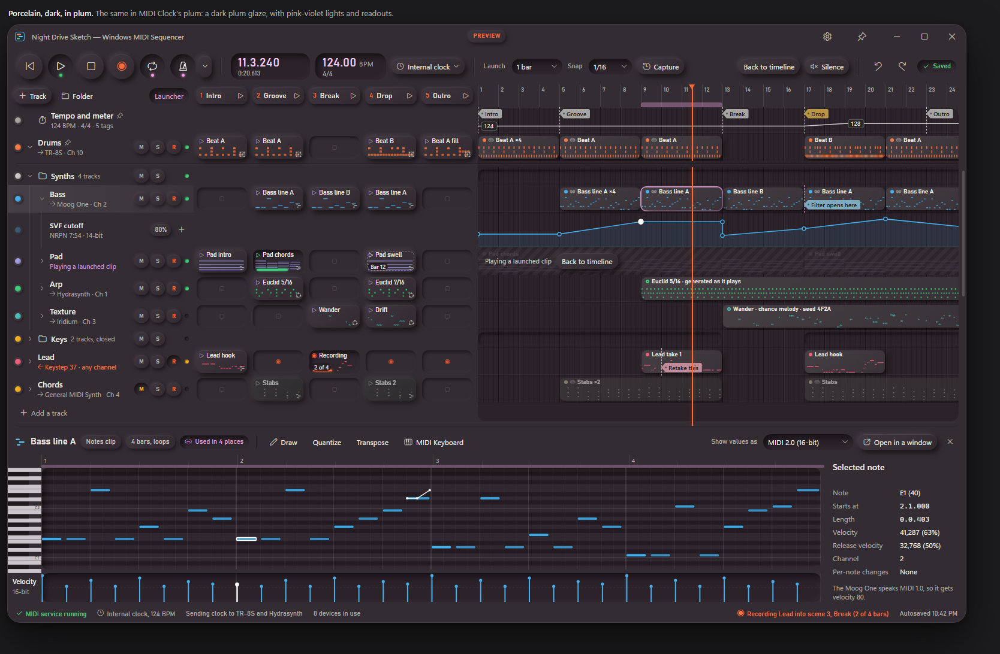
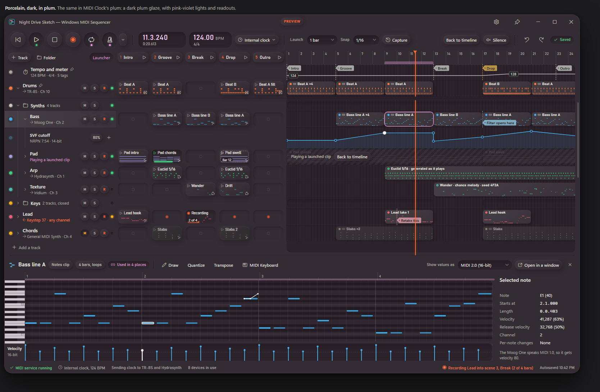
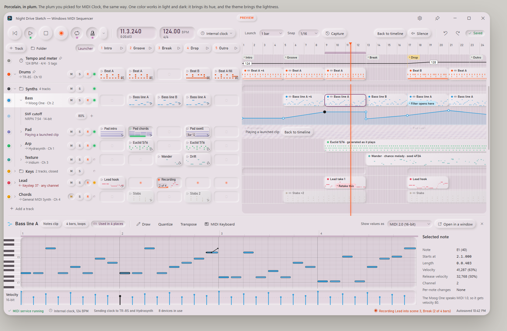
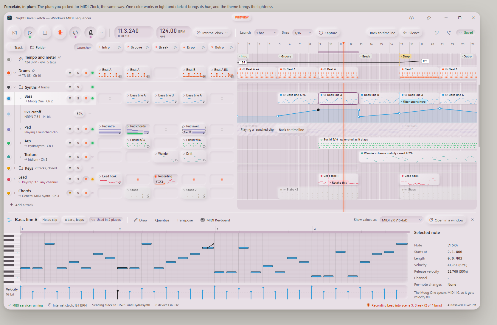
You found dark Porcelain's shadows too dark and too deep, and chose from these three, tried on dark in your aqua, next to how it was. Each is a set of shadows in porcelain-soft.css. The close-ups are at 100% and at twice that.
| Keys | Pads | Clips | Readouts | |
|---|---|---|---|---|
| Before | 20 | 19 | 20 | 18 |
| A, lighter | 11 | 11 | 11 | 9 |
| B, lighter and more diffuse | 9 | 9 | 12 | 7 |
| C, B in the glaze | 9 | 7 | 11 | 7 |
How much darker than the surface each shadow gets at its deepest, in levels out of 255, measured against the same page with no shadows. The clips include the selected one, which sits highest.
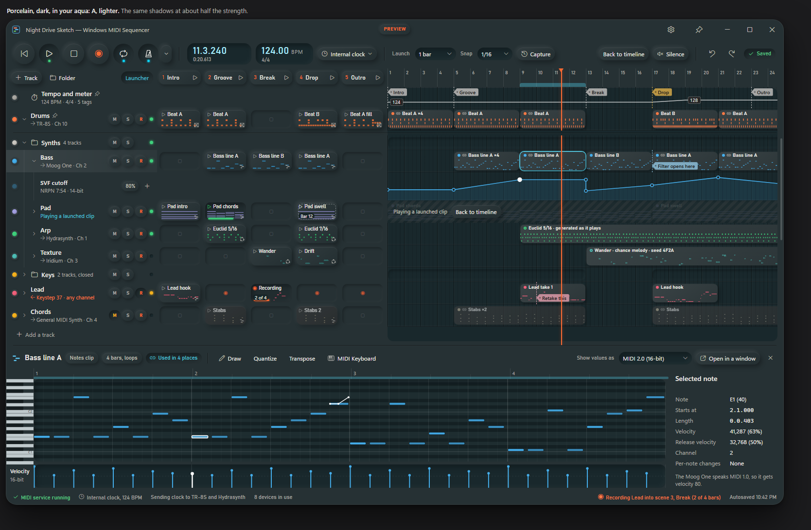
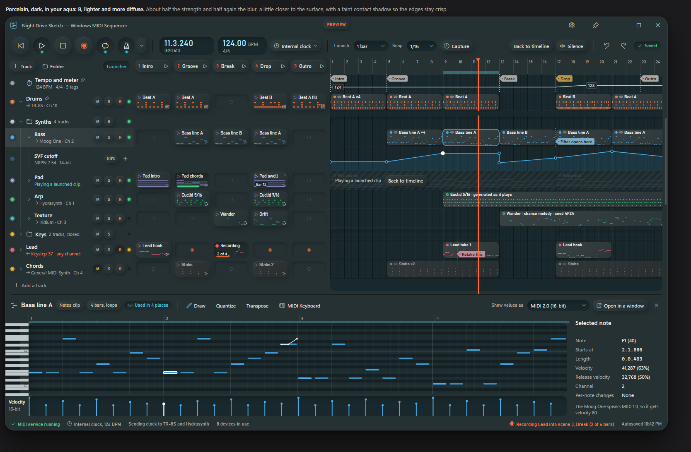
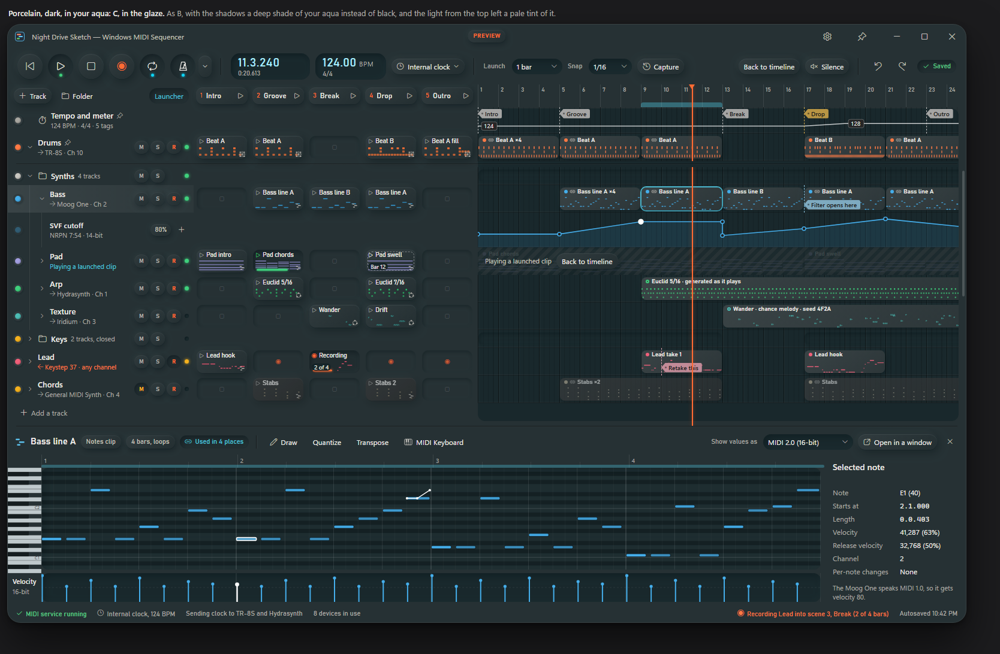